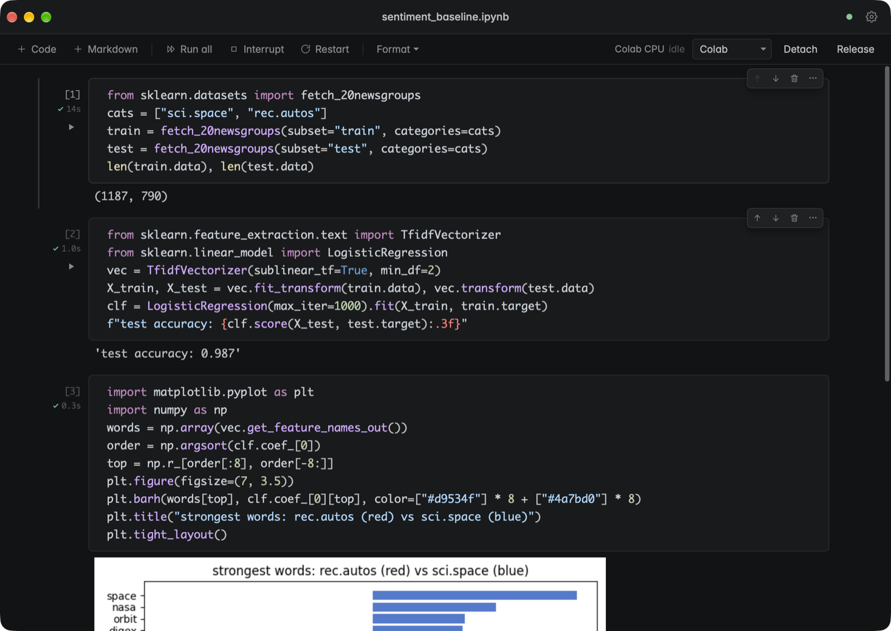

Colab Notebook
A fast native Mac app for Jupyter notebooks that run on Google Colab GPUs and TPUs. Claude Code can drive it while you watch every cell run.
Download for Mac Source on GitHub
Claude wrote and ran these three cells on a Colab runtime through the app. The output and chart showed up live.
Why it exists
Colab gives you free and cheap GPUs, but you work in a browser tab and your notebooks live in Drive. Colab Notebook keeps the runtime and drops the rest. Your .ipynb files stay on your disk, next to your code and git. The app opens instantly, and you get a real editor with completions, go to definition, rename and formatting (ty and ruff). Pick Colab CPU, a T4 or A100 GPU, a TPU, or your local .venv from the kernel menu. Outputs, plots, tqdm bars and widgets render like they do in Colab.
Working with Claude Code
The app runs a small MCP server on your machine. Claude Code uses it to open a notebook, connect a Colab runtime, then write and run one small cell at a time. You see each cell appear in the app and its output stream in live. If a cell fails, Claude fixes that cell and runs it again instead of piling up copies, so you end up with a clean notebook rather than a script dump. You can take over at any point, edit a cell yourself, and ask Claude to carry on from there.
A typical ask looks like this:
open ~/research/probe.ipynb on a colab T4, load gpt2 with transformer-lens, cache activations for 200 sentences and plot attention entropy per layer
Claude connects the GPU, loads the model, runs the forward passes and plots the result in front of you. When it's done, it asks before releasing the runtime, so you don't burn compute units by accident.
A workflow for research engineers
- Keep a folder of notebooks in your project repo. Open one in the app, or clone any Colab link with File > Clone from Colab.
- Ask Claude for the next experiment in plain language. It works in small, runnable steps: load data, check shapes, train, plot.
- Read the outputs as they land. Redirect Claude, or edit cells yourself. Both of you are editing the same live notebook.
- Switch between local and a Colab GPU from the kernel menu when a step needs more power. Open separate windows to run experiments side by side.
- Commit the notebook with your code. It's a normal
.ipynbfile with its outputs.
Setup
- Download the latest release, open the DMG and drag the app to Applications. It's signed and notarized.
- Open the app, then go to Settings and sign in with Google to use Colab runtimes.
- Register the app with Claude Code:
claude mcp add --transport http --scope user colab http://127.0.0.1:7761/mcp
- Copy the colab-notebook skill to
~/.claude/skills/so Claude knows how to work in notebooks the Colab way.